Dusk Patrol
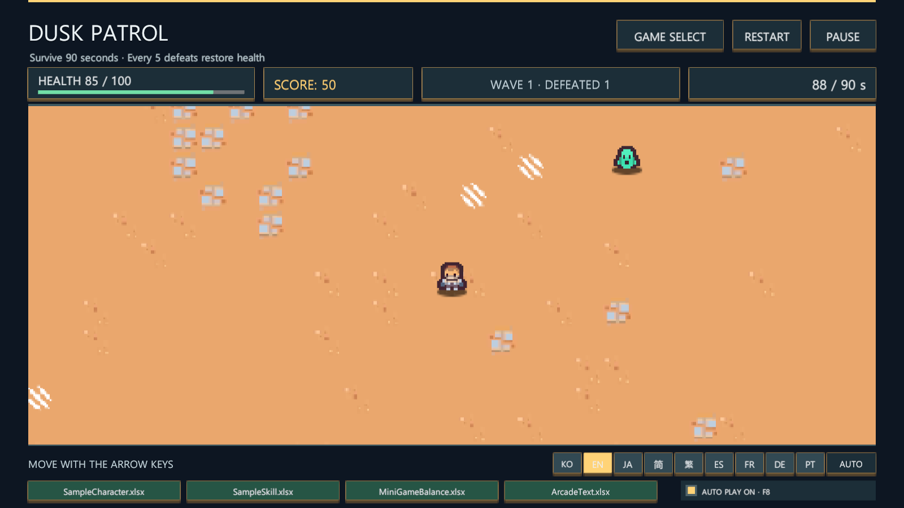
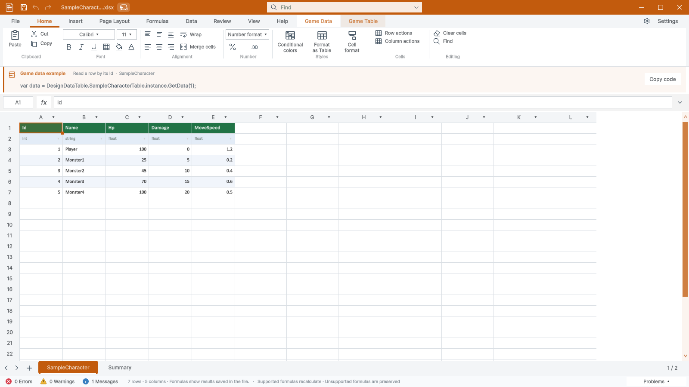
사용 가이드
탭을 선택해 필요한 기능을 찾으세요. 게임 데이터 변환은 네 단계면 됩니다.
| 기능 | 설명 |
|---|---|
| XLSX / CSV | 프로젝트 파일을 더블클릭하거나 인스펙터의 Open Table을 누릅니다. |
| Assets > Create > Design Data Table | 일반 XLSX·CSV, 게임 데이터 XLSX, 글로벌 Enum 파일을 만듭니다. |
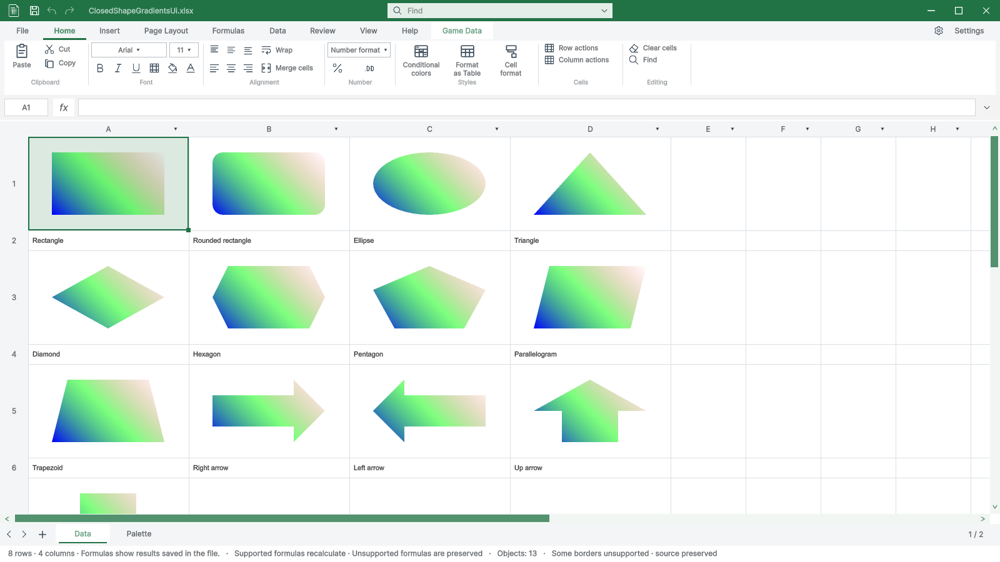
| 기능 | 설명 |
|---|---|
| Input / Enter / Tab | 입력 후 Enter는 아래로, Tab은 오른쪽으로 이동합니다. Esc로 현재 편집을 취소합니다. |
| Copy / Paste / Fill / Find | 범위 복사·선택하여 붙여넣기·채우기 핸들·찾기와 바꾸기를 사용합니다. 와일드카드는 선택 옵션입니다. |
| 기능 | 설명 |
|---|---|
| Sheets | 하단 탭으로 시트를 전환합니다. +와 탭 메뉴에서 추가·이름 변경·삭제합니다. |
| Minimize / Maximize / Preview | 최소화 문서는 하단 목록에 표시합니다. 항목 호버로 카드, 카드 호버로 전체 미리보기, 클릭으로 복원합니다. |
| File status | 초록은 일반 시트, 주황은 게임 데이터, 파랑은 로컬라이징입니다. 창과 파일 아이콘에 같은 상태를 표시합니다. |
| Close unsaved file | 수정한 파일을 닫으면 파일 이름·경로와 저장·취소·버리기를 표시합니다. 저장 실패 시 창을 유지합니다. |
| Table name search | Project에서 XLSX 등록 테이블 이름을 검색하면 원본 파일 이름이 붙은 시트 바로가기도 나옵니다. 선택한 원본 시트로 열리므로 한 파일에 여러 테이블을 유지할 수 있습니다. |
| Contextual tabs | 설정은 오른쪽 끝에 고정됩니다. 게임 데이터와 설정 사이에 게임·로컬라이징·열거형·Summary 시트 또는 선택한 표·도형·차트·그림의 전용 탭이 나타납니다. 개체 도구는 선택하면 열리고 선택을 해제하면 사라집니다. |
| 기능 | 설명 |
|---|---|
| Cell format | 글꼴·맞춤·표시 형식·채우기·테두리를 설정합니다. 행·열 크기와 틀 고정도 지원합니다. |
| Sort / Filter | 열 머리 메뉴를 사용합니다. 정렬은 행 순서를 바꾸고 필터는 데이터를 삭제하지 않고 숨깁니다. |
| Table Design | 구조적 Excel 표 안의 셀을 선택하면 표 디자인 탭이 나타납니다. 표 범위 선택·셀 서식·일반 범위 변환을 제공하며 Undo로 표와 전용 탭을 복구합니다. |
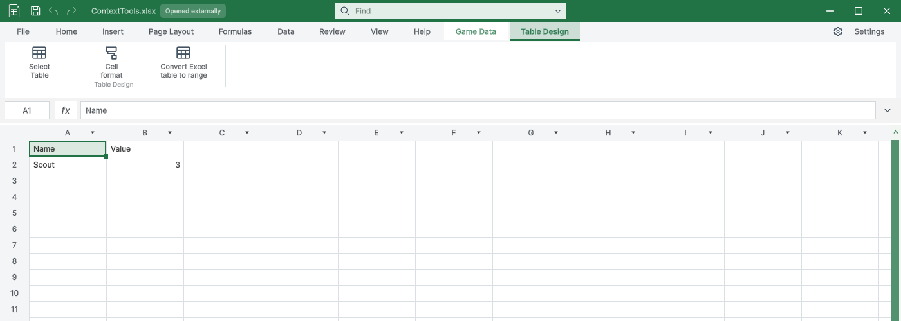
| 기능 | 설명 |
|---|---|
| Formula bar | =SUM(A3:A6) 같은 지원 수식을 입력합니다. 미지원 수식은 원본과 저장된 결과를 유지합니다. |
| 기능 | 설명 |
|---|---|
| Charts | 차트를 선택해 지원하는 계열과 표시 옵션을 편집합니다. |
| Objects | 더블클릭으로 채우기·선·텍스트·크기·위치를 설정합니다. 기본·사용자 경로를 지원하며 읽기 전용 개체도 보존합니다. |
| Shape Format / Chart Design | 도형·차트·그림을 선택하면 전용 탭이 열립니다. 채우기·윤곽선·텍스트·차트 설정·크기/위치·개체 관리는 기존 속성 편집기의 해당 페이지로 연결됩니다. 지원 범위와 보호 설정을 따릅니다. |
| 기능 | 설명 |
|---|---|
| Save / Recovery | 저장은 원본 파일을 갱신합니다. 닫기 확인에 파일명을 표시하며 복구 초안은 원본에 자동 덮어쓰지 않습니다. |
| 문서 종류별 색상 | 설정 > 화면 및 색상에서 일반·게임 데이터·전역 열거형·로컬라이징 색상을 각각 지정합니다. 창 제목·선택·시트 탭·원본 아이콘에 즉시 반영되며 프로젝트별로 저장됩니다. 설정 초기화로 기본 색상을 복구합니다. 게임 데이터 리본 탭도 현재 창 색상을 따릅니다. |
| Settings > Appearance > Window animations | 최소화·최대화·복원·미리보기 효과를 켜고 끕니다. 기본값은 켜짐이며 호버 대기 시간은 그대로입니다. |
| Option windows | 왼쪽 메뉴에서 항목을 선택합니다. 고급 색상·서식·테이블 상세는 필요할 때 펼칩니다. 도형은 선택한 채우기 방식만 표시합니다. |
| Play appearance | Play 중에도 옵션 창의 밝기는 유지됩니다. 사용할 수 없는 명령은 비활성화됩니다. |
| Settings > Code Comments | 최초 설정은 시스템 언어를 사용합니다. 주석 언어를 선택하고 코드 주석 언어 갱신을 누르세요. 에셋의 알려진 XML 요약을 오프라인으로 갱신하며 직접 수정한 설명과 미번역 설명은 보존합니다. 생성 코드도 선택한 언어를 사용합니다. 마지막 갱신 되돌리기는 이후 수정한 파일을 보존합니다. |
| 기능 아이콘 | 리본·설정·파일 메뉴의 이미지 아이콘을 통일했습니다. 번역 갱신·생성 데이터 보기·기본 언어 변경은 서로 다른 그림으로 구분합니다. 기능 아이콘은 문서 색상을 따르며 제목 표시줄의 조작 아이콘은 흰색입니다. |
| 파일별 사용 예제 | 리본 아래 카드에서 현재 게임 테이블·열거형·로컬라이징의 코드 사용법을 확인합니다. Id·멤버·번역 키를 선택하면 예제가 바뀌며 코드 복사로 전체 코드를 가져옵니다. 로컬라이징은 대체 언어를 명시하고 Summary는 컬럼 동기화 방법을 안내합니다. |
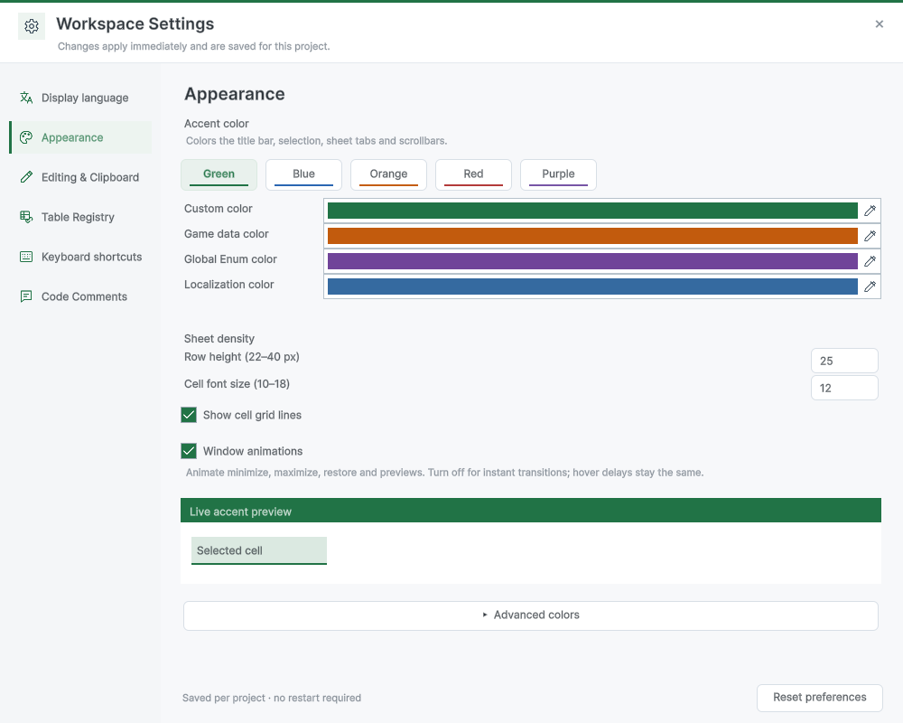
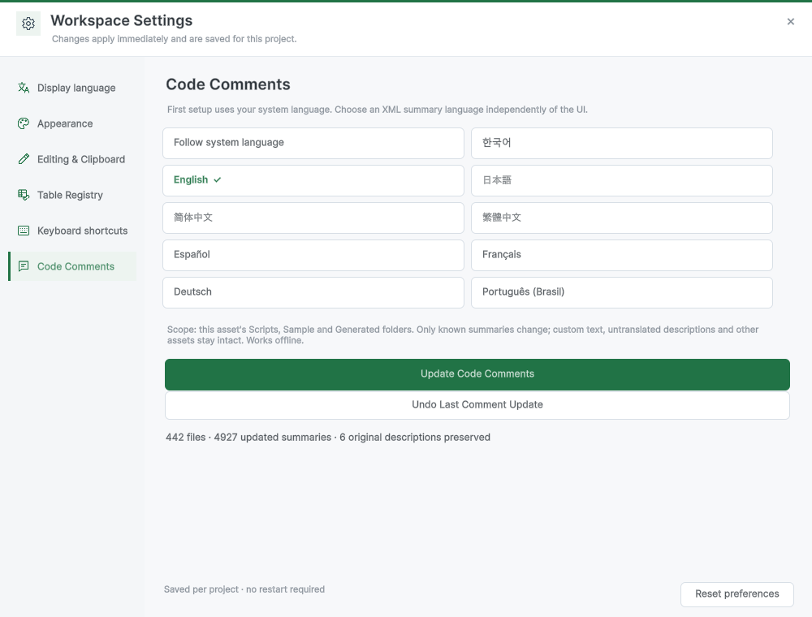
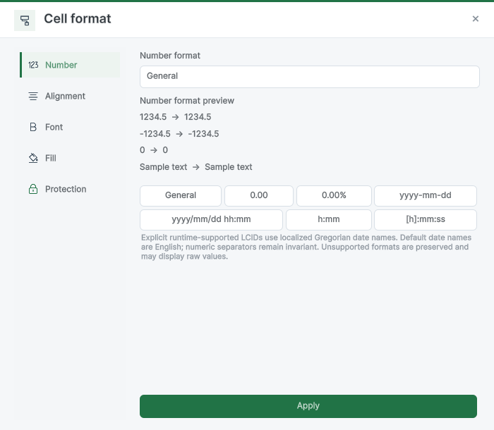
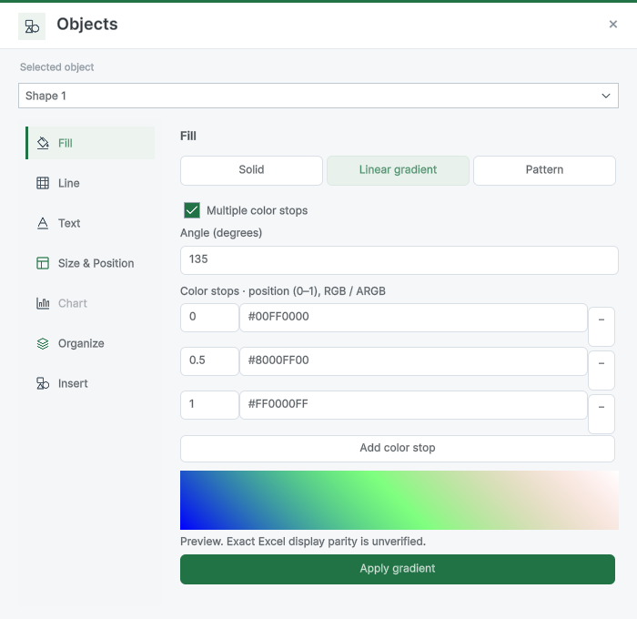
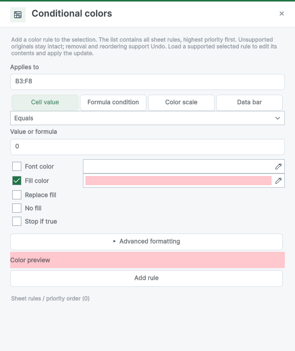
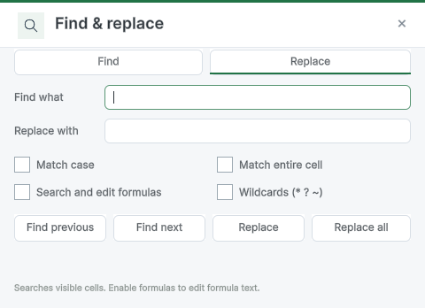
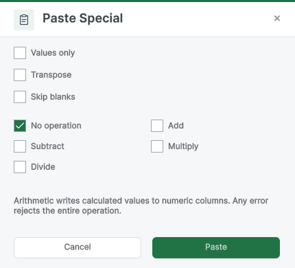
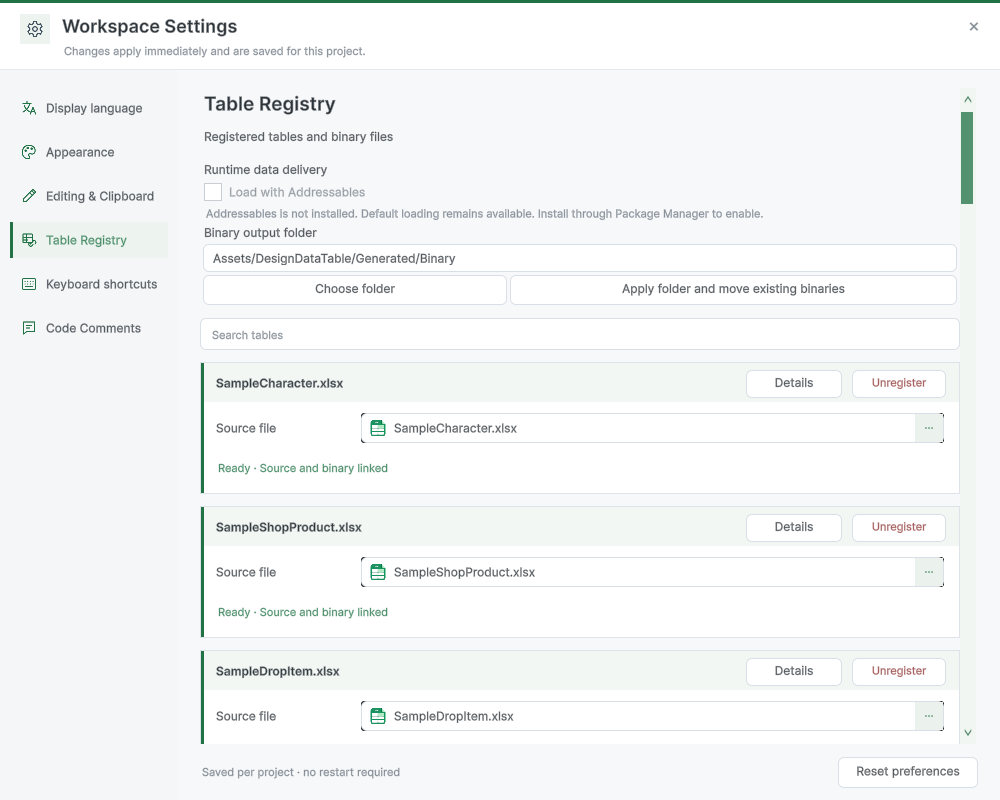
| 기능 | 설명 |
|---|---|
| 1 · 형식 준비 | Assets 안에 XLSX를 저장합니다. 1행은 이름, 2행은 타입, 3행부터 값입니다. 첫 컬럼은 Id : int로 시작합니다. |
| 2 · 현재 시트 등록 | 저장 후 데이터 시트를 선택하고 Game Data > Use as Game Data Table을 누릅니다. Summary·Enum 정의 시트는 등록할 수 없습니다. |
| 3 · 검증·저장 | 등록하면 Summary와 주황색 탭이 생깁니다. 저장 시 타입·Id를 검증하고 생성 C#·바이너리를 갱신합니다. |
| 4 · 게임에서 사용 | 생성된 Table.instance.GetData(id)로 읽습니다. 컬럼 타입을 바꾸면 Unity 컴파일 후 실행합니다. |
| Id | Name | Speed |
|---|---|---|
| int | string | float |
| 1 | Scout | 4.5 |
| 2 | Guardian | 2.8 |
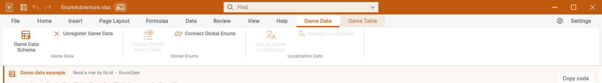
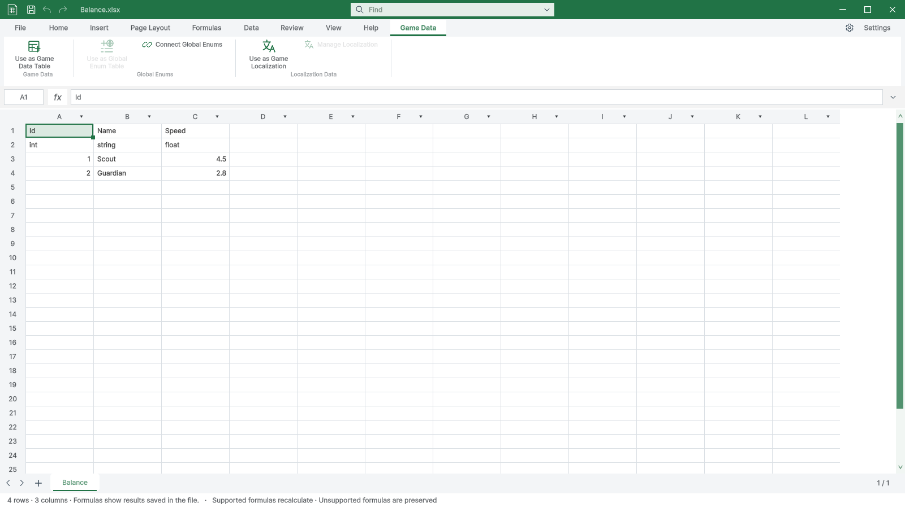
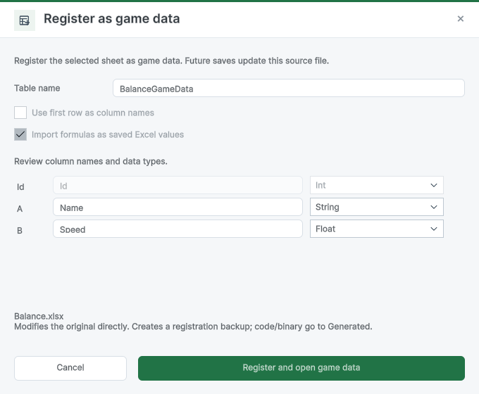
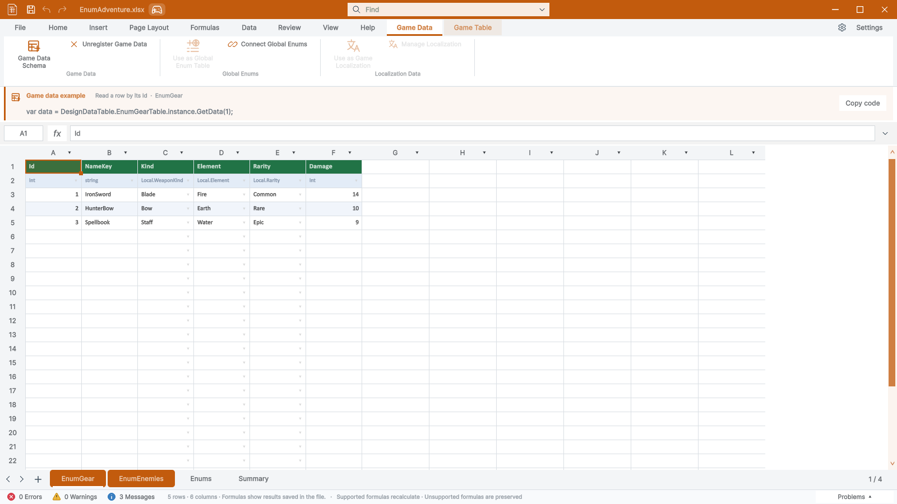
| 기능 | 설명 |
|---|---|
| Game Data ribbon | 일반 게임 데이터·글로벌 열거형·로컬라이징을 나눕니다. 홈 탭과 같은 큰 주 동작·작은 보조 동작 구조를 사용합니다. |
| Row 2 | 2행 팝업에서 기본 타입이나 정의한 Enum을 선택합니다. |
| Two-way sync | 원본에 이름 있는 컬럼을 추가하면 Summary에 반영합니다. Summary 행을 완성하면 원본 컬럼이 생깁니다. 기존 값은 유지합니다. |
| Workbook / Sheets | 한 파일에 여러 데이터 시트를 등록할 수 있습니다. Summary의 Sheet로 각 테이블을 구분합니다. |
| Integer codes | 앞자리 0이 있거나 Int64 범위를 넘는 정수 코드는 자릿수 보존을 위해 string으로 추론합니다. |
| Summary | 게임 테이블에 기본으로 추가됩니다. 기존 등록 테이블도 열 때 점검하며 필수 Summary는 삭제할 수 없습니다. 별도 생성 버튼은 없습니다. |
| Game Table / Enum Tools | 게임 테이블 도구는 스키마·검사·가져오기/내보내기·저장을 제공합니다. 열거형 도구는 정의 시트 이동·검사·코드 갱신을 제공합니다. 서머리 도구로 게임 시트에 돌아갈 수 있습니다. |
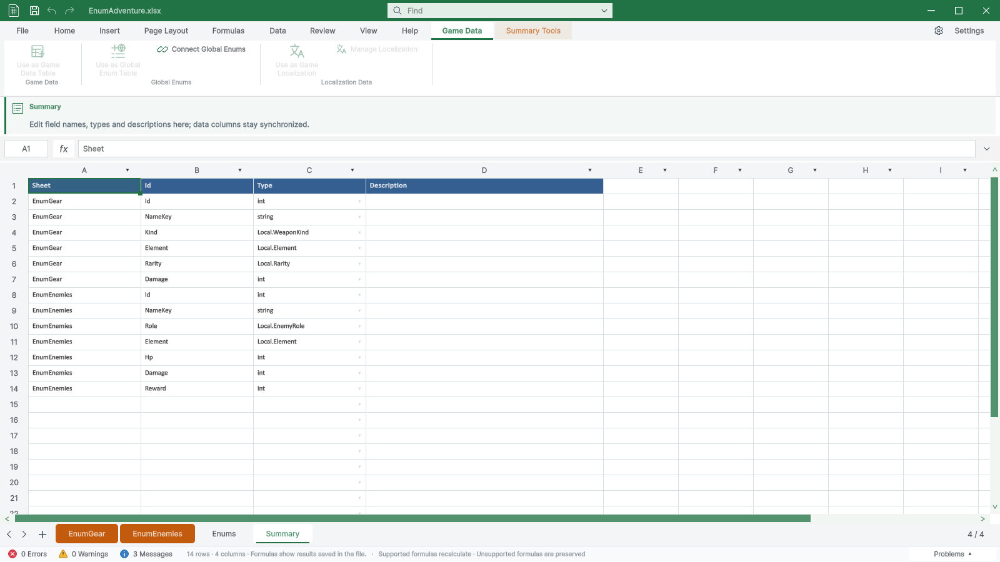
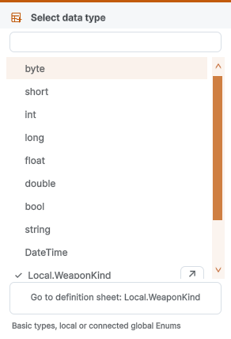
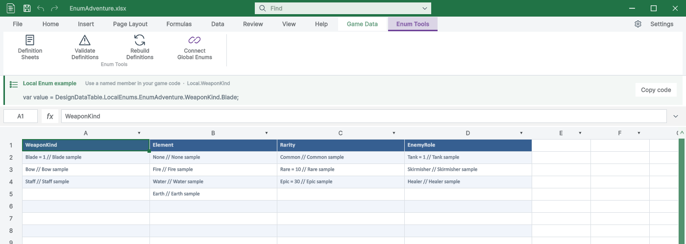
| 기능 | 설명 |
|---|---|
| Local · Enums | Enums 시트의 열 하나가 Enum 하나입니다. 1행은 타입명, 아래는 Blade 또는 Rare = 10 // 설명처럼 적습니다. |
| Values & dropdowns | 숫자와 설명은 생략할 수 있습니다. 자동 번호는 0부터, 이후에는 앞 값의 다음 번호입니다. 데이터 셀에서 멤버를 선택합니다. |
| Global · Connect Global Enums | 글로벌 Enum 파일을 등록하고 사용 파일에서 연결한 뒤 2행에 Group.Enum을 선택하면 같은 C# 타입을 공유합니다. |
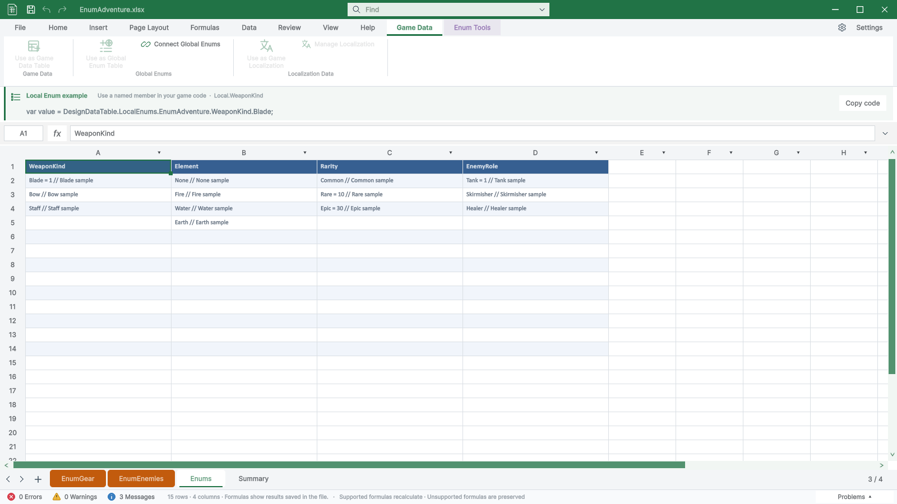
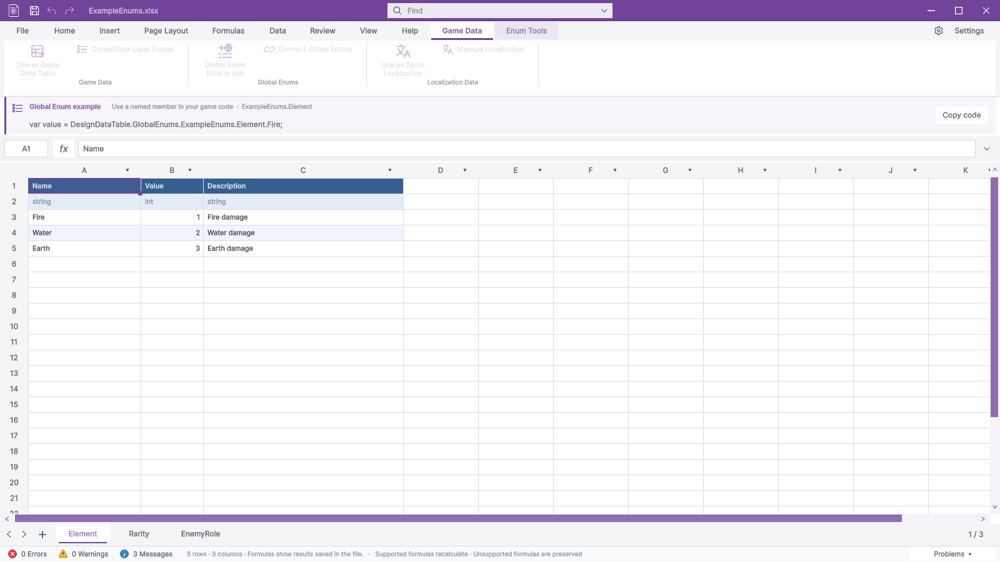
| 기능 | 설명 |
|---|---|
| Warnings | 잘못된 이름·예약어·중복 컬럼, Enum 누락, 형식·범위 오류는 붉게 경고합니다. 수정 후 저장합니다. |
| Play mode / External files | 게임 데이터·로컬라이징·로컬/글로벌 Enum 파일은 Play 중 다른 시트를 포함해 읽기 전용입니다. 잠금 배지·안내와 옅어진 그리드를 공통 표시하고 편집·저장·재생성을 차단합니다. Play 종료 후 편집이 복원됩니다. 외부 파일 등록에는 Assets 내부 원본이 필요합니다. |
| 오류·경고 목록 | 하단에 게임 데이터·Enum·로컬라이징의 오류·경고·메시지 건수를 표시합니다. 건수나 문제 목록을 클릭해 펼치세요. 심각도·시트로 필터링하고 코드·설명을 검색하며, 항목을 누르면 해당 셀로 이동합니다. 위쪽 경계를 끌어 높이를 조절합니다. 수정 후 검사는 분할 갱신되며 다시 검사로 새 검사를 시작합니다. |

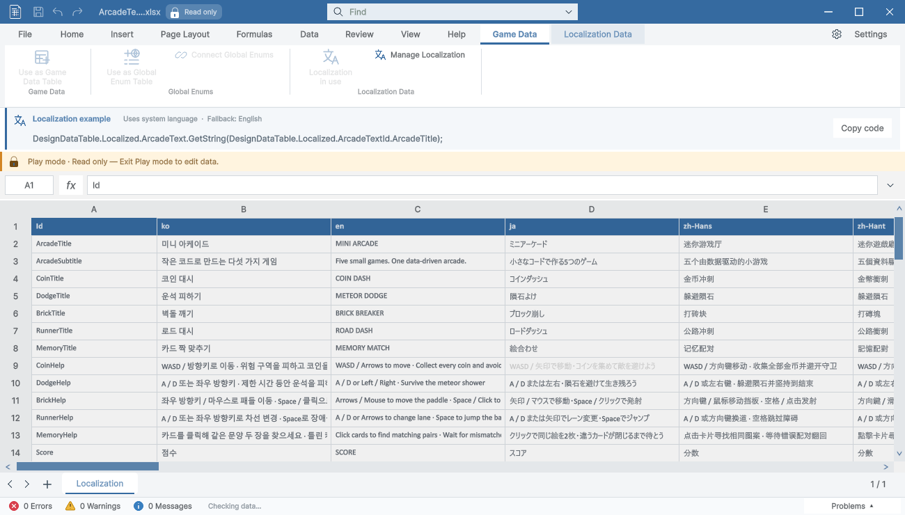
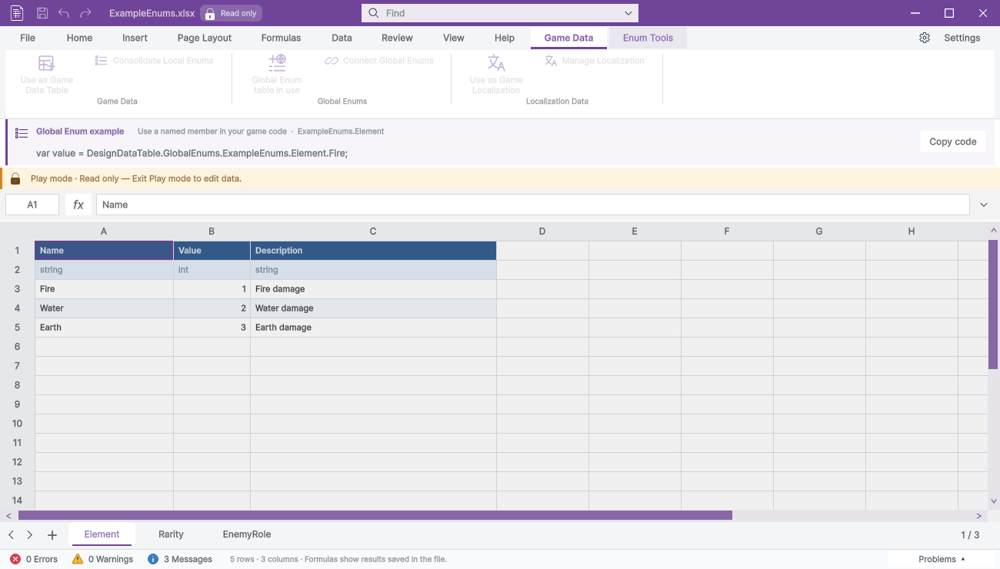
| 기능 | 설명 |
|---|---|
| Id / korea / english / france | 1행에 Id와 언어명을 적습니다. 다음 행부터 Enum 키와 번역 문자열을 적으며 타입 행은 없습니다. |
| Use as Game Localization | Game Data에서 로컬라이징으로 등록하고 생성된 GetString(Enum)을 호출합니다. 시스템 언어 또는 지정 언어를 사용합니다. |
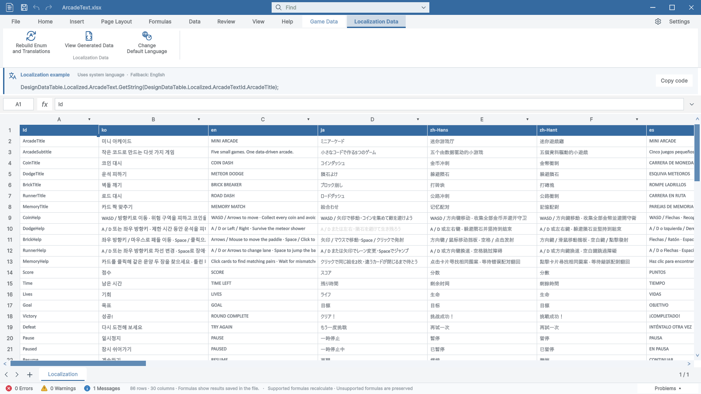
| 기능 | 설명 |
|---|---|
| 24 scenes · 2D / 3D | Sample/Scenes에서 씬을 열고 Play합니다. 실행 전에도 저장된 UI가 보이며 게임마다 코드가 분리되어 있습니다. |
| Data buttons / Auto Play / Esc | 하단 데이터 버튼으로 사용 파일을 엽니다. 자동 플레이는 기본 꺼짐이며 촬영 시 켭니다. Esc로 일시정지·재개합니다. |


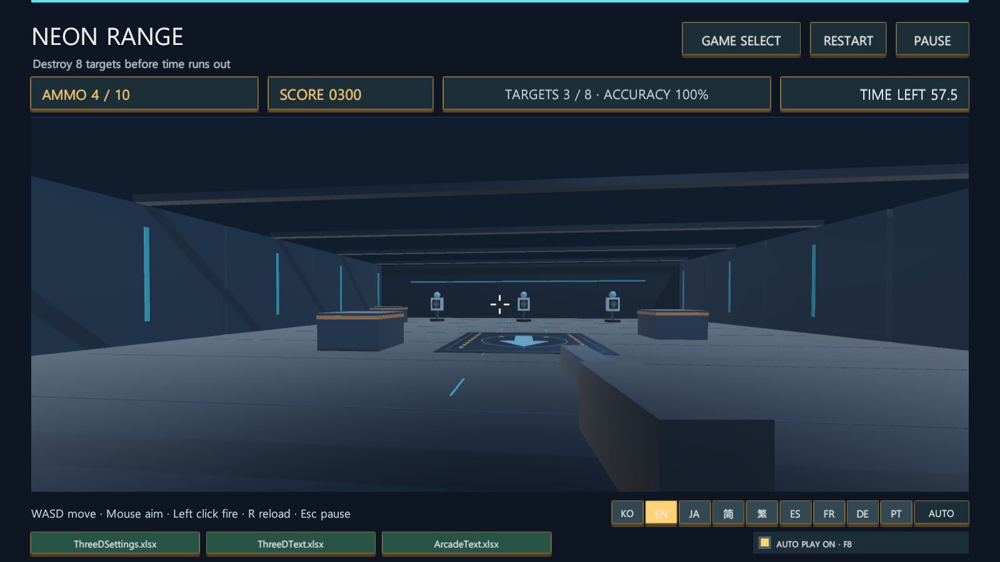
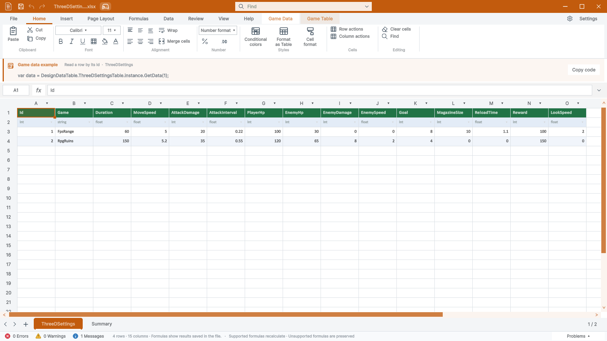
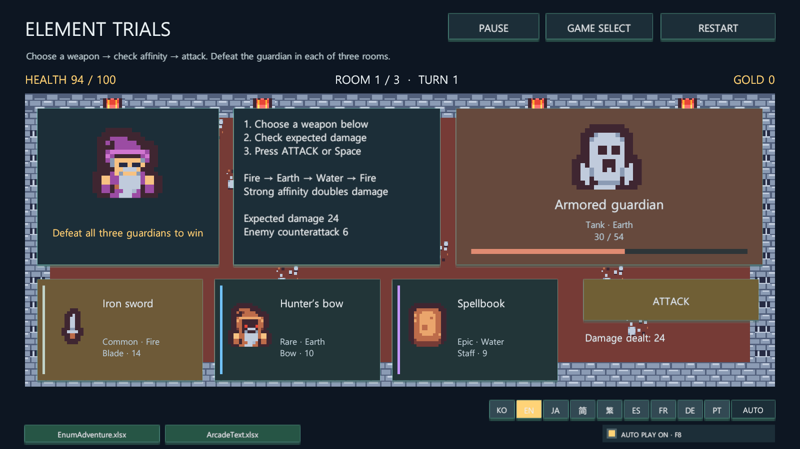
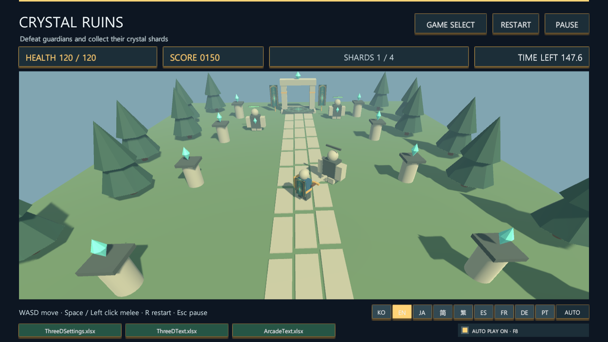
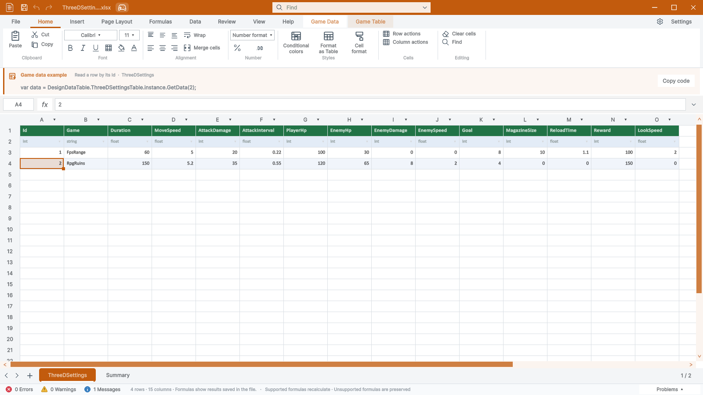
| 기능 | 설명 |
|---|---|
| Generated / Code & Binary | 게임 데이터 저장 시 타입 C#과 바이너리를 갱신합니다. 생성 API를 사용하고 예제 어셈블리는 프로젝트 코드와 분리합니다. |
| Unregister Game Data | 선택 시트의 등록과 생성 파일을 해제합니다. 원본 워크북은 유지합니다. |
| AI API / MCP / CLI | MCP·CLI·Python이 같은 Unity API를 사용합니다. 테이블 검색·Id 편집·스키마/Enum 관리·범위 읽기/쓰기/서식·시트 작업을 지원합니다. 실제 스키마와 리비전을 먼저 조회하세요. 영문 API 문서에 연결 방법과 짧은 예제가 있습니다. |
| Validated batch / PNG | 한 파일의 배치를 dryRun으로 검증하고 실제 엔진 PNG를 확인한 뒤 같은 리비전으로 저장합니다. 오류가 있으면 배치를 거부합니다. Unity가 열려 있고 Play 밖이어야 하며 미저장 초안이 있으면 편집을 막습니다. 시간 초과 시 요청 Id 상태부터 확인하세요. |
using DesignDataTable;
using DesignDataTable.Localized;
var hero = SampleCharacterTable.instance.GetData(1);
string title = ArcadeText.GetString(ArcadeTextId.ArcadeTitle);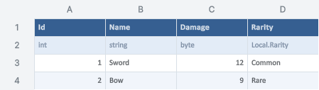